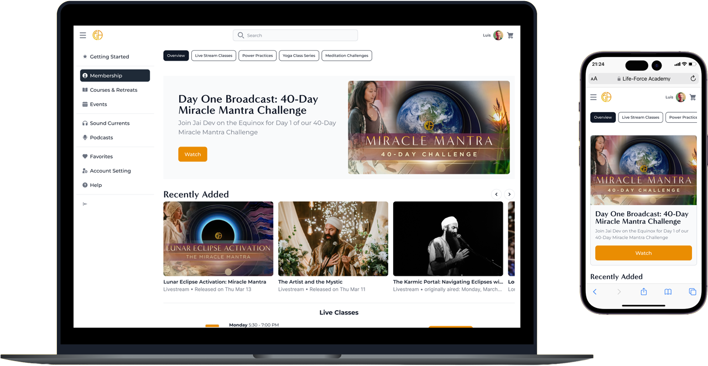

Delivered
Onboarding, membership selection, first-session dashboard
Life Force Academy
I redesigned onboarding so new members did not land in a generic content wall after checkout. The new 6-step flow captured goals and experience level, then shaped the first-session dashboard around them, improving completion by 20% and conversion by roughly 15%.

Dashboard walkthrough
A click-through of the post-onboarding dashboard, showing how members found relevant content, returned to classes, and moved through the live experience.
Project snapshot
Delivered
Onboarding, membership selection, first-session dashboard
Timeline
2023-2024
Constraint
WordPress / WooCommerce
Baseline
Previous dashboard-first handoff
Problem
Life Force Academy had strong content but a fragmented UX. Onboarding dropped users before they reached their first lesson. The dashboard exposed everything at once, creating cognitive overload. Instructors had no clear path to grow their audience.
Case study image
Approach
We started with journey mapping across three user types: new learner, returning student, and instructor. This surfaced the core tension: the platform was organized by content type, but users thought in terms of goals.
The redesign reoriented the IA around user intent — progressive onboarding with a single clear next action, a dashboard that surfaces what matters now, and a simplified instructor publishing flow.
Before
After
Outcome
The redesigned platform launched across all user tiers. Onboarding completion increased, instructor publishing time dropped, and the new dashboard became the primary navigation surface — validating the intent-first IA.